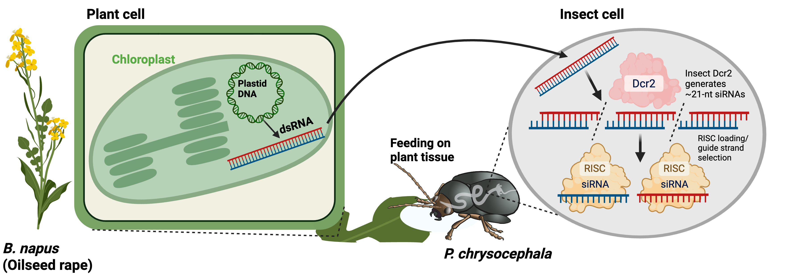

RESEARCH
Natural dsRNA
We investigate naturally occurring double-stranded RNA in crop plants and its role in interactions with insect herbivores.
A 2026 preprint examines plant-derived dsRNA in the interaction between oilseed rape and the cabbage stem flea beetle. The current DFG Walter Benjamin project investigates the underlying RNAi mechanism and opportunities to enhance natural RNA-based defence.

Working hypothesis from the 2026 preprint: plant-derived dsRNA is ingested during feeding and processed into siRNAs that associate with RISC. Original Figure 1a.
Current DFG project
Walter Benjamin position · 2026–2028
Characterization and Enhancement of a Natural RNAi-Based Defence Mechanism in Crop Plants Against Insect Herbivores
Host: Justus Liebig University Giessen. The project investigates the contribution of naturally occurring plant dsRNA to defence against insect herbivores.
DFG project record